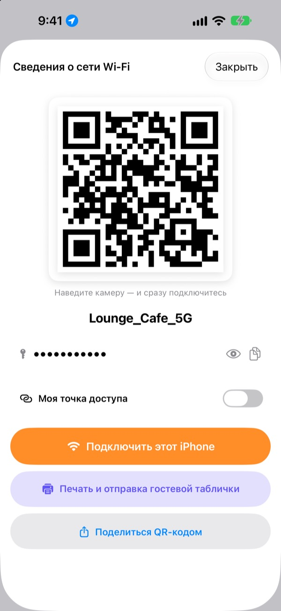
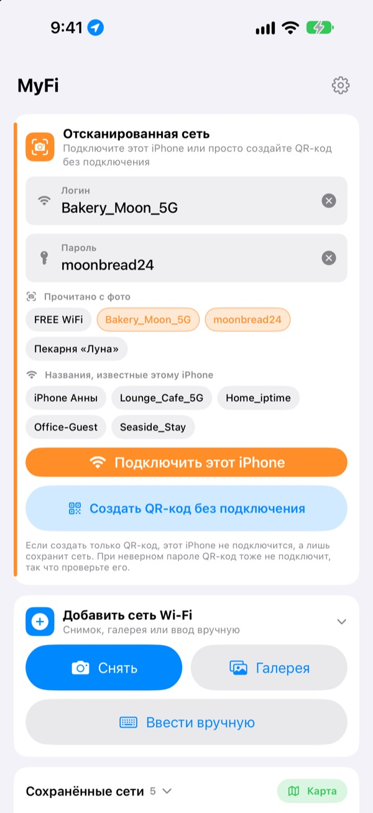
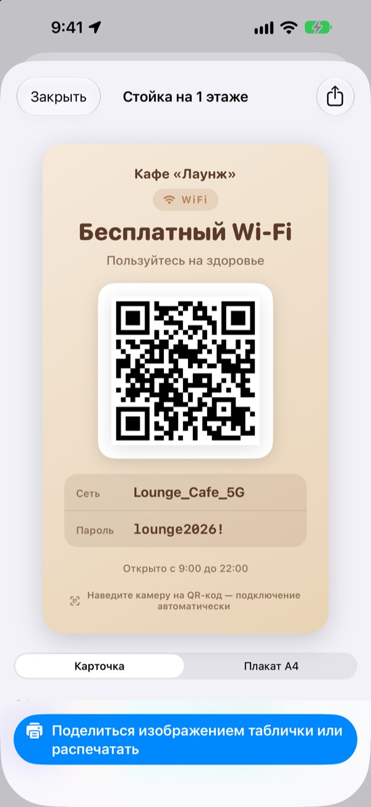
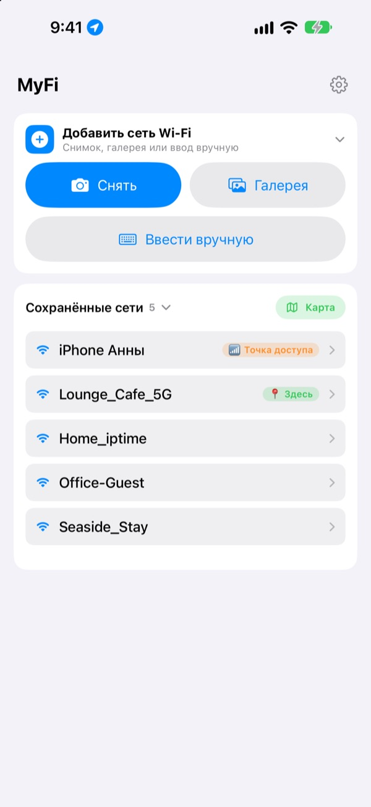

Хватит диктовать пароль.
Покажите QR-код.
Друзьям достаточно навести камеру, и они в сети. Табличка на стене кафе? Одно фото, и этот iPhone подключён. Больше никаких опечаток при переписывании.
Все функции бесплатны. iPhone с iOS 17 или новее.

Сделайте QR-код своей сети
Измените имя или пароль, и табличка тут же обновится. Наведите камеру телефона, и появится настоящее предложение подключиться.
«Какой там пароль от Wi-Fi?» Который раз за сегодня?
Диктуете и путаете заглавные буквы. Переписываете табличку со стены и путаете 0 и O. А потом объясняете всё заново. MyFi сводит это к одному фото и одному QR-коду.
Сняли и подключились
Сфотографируйте табличку с Wi-Fi или чек либо выберите снимок в галерее. MyFi прочитает имя сети и пароль и подключит этот iPhone. Если на табличке есть QR-код, он считывается первым, чтобы данные были точными.
Если текст неразборчив, перетащите нужный фрагмент со снимка в поле имени или пароля.

Табличка для гостей с печатью
Выберите одну из 7 тем и добавьте название, логотип и строки вроде часов работы. Выберите карточку или вертикальный плакат A4, сохраните как картинку или сразу распечатайте через AirPrint.
Делайте несколько табличек, для каждого заведения или столика, и правьте их когда угодно.

Знакомые места наверху списка
Сети, к которым вы подключались или которыми делились, сохраняются вместе с местом. Вернётесь туда, и эта сеть окажется наверху, а все сохранённые места видны на карте.
Поставьте QR-код самой нужной сети виджетом на экран «Домой» или экран блокировки. Спросит гость, просто покажите экран.

Начать можно в три шага
- 1
Откройте приложение
Оно один раз попросит доступ к геопозиции: iOS сообщает имя текущей сети Wi-Fi только приложениям с этим доступом.
- 2
Снимите или введите
Сфотографируйте табличку или один раз введите пароль от своей сети.
- 3
Подключитесь или покажите
Подключите этот iPhone или покажите QR-код камере собеседника.
Где что находится
- Подключиться по фото таблички
Добавить сеть Wi-Fi, затемСнятьилиГалерея, затемПодключить этот iPhone- Ввести данные вручную
Добавить сеть Wi-Fi, затемВвести вручную- Только создать QR-код
Создать QR-код без подключения- Отправить QR-код в сообщении
- Коснитесь сохранённой сети, затем
Поделиться QR-кодом - Табличка для гостей
- Коснитесь сохранённой сети, затем
Печать и отправка гостевой таблички - Своя точка доступа в виде QR-кода
- Коснитесь сохранённой сети и включите
Моя точка доступа - Подключиться или поделиться одним жестом
- В списке смахните вправо, чтобы подключиться, и влево, чтобы поделиться
- Посмотреть сохранённые места
Картарядом сСохранённые сети- QR-код на экране «Домой»
- Нажмите и удерживайте экран «Домой» и добавьте виджет MyFi
QR-код Wi-Fi
QR-код можно сразу открыть и через Siri или Быстрые команды.
Все функции бесплатны
Бесплатно
- Подключение к Wi-Fi по фото
- Создание QR-кодов и отправка картинкой
- Таблички для гостей в 7 темах, карточка или плакат A4, печать через AirPrint
- Виджеты для экрана «Домой» и экрана блокировки
- Карта сохранённых сетей
- Без рекламы и без регистрации
Чаевые (по желанию)
- Если приложение нравится, можно поддержать разработку чаевыми
- Чаевые ничего не открывают. Без них доступны все функции
Чаевые это небольшой разовый платёж.
Ни подписок, ни платных функций.
Частые вопросы
Почему пароль нужно вводить самому?
iOS не позволяет ни одному приложению читать сохранённые на устройстве пароли Wi-Fi. Поэтому MyFi определяет имя сети, а пароль вы вводите один раз. Дальше используется сохранённый.
Не видно имени текущей сети Wi-Fi.
iOS сообщает имя сети только приложениям с доступом к геопозиции. Разрешите MyFi в Настройках › Конфиденциальность и безопасность › Службы геолокации. Геопозиция нужна только для чтения имени сети и узнавания мест, куда вы возвращаетесь.
Имя или пароль распознаны неверно.
Подойдите ближе и снимайте ровно. Если всё равно неверно, перетащите нужный фрагмент со снимка в поле или исправьте вручную. Если на табличке есть QR-код Wi-Fi, MyFi прочитает его и заполнит точные данные.
Какие таблички он умеет читать?
Лучше всего таблички на английском или корейском с подписями вроде ID, PW, SSID, Network или Password. Даже без подписей он находит строку, похожую на пароль. QR-код Wi-Fi на табличке читается точно на любом языке.
Как подключиться по моему QR-коду?
На iPhone или Android достаточно навести встроенную камеру на код и нажать на предложение подключиться. Никакое приложение не нужно.
Могут ли другие увидеть мой пароль?
В QR-коде стандартные данные для входа в Wi-Fi. Делиться или нет, решаете только вы, а на гостевой табличке пароль можно скрыть.
Почему не подключиться к своей точке доступа?
Режим модема на iPhone и есть сам этот телефон, к себе он подключиться не может. Включите Моя точка доступа, и MyFi будет считать её QR-кодом, чтобы раздавать другим.
Куда уходят данные о моих сетях?
У MyFi нет сервера. Имена сетей, пароли, результаты распознавания фото и геопозиция обрабатываются и хранятся только на устройстве. Ни рекламы, ни слежки. Приложение отправляет в Apple iCloud только анонимную статистику использования и отчёты об ошибках, чтобы его можно было исправлять.
На каких устройствах работает?
На iPhone с iOS 17 или новее. Приложение доступно на 24 языках.
Вопросы или пожелания? Пишите на leeo@kakao.com. Обычно отвечаю за 2–3 дня.